- AQS 万字图文全面解析.md.html
- Docker 镜像构建原理及源码分析.md.html
- ElasticSearch 小白从入门到精通.md.html
- JVM CPU Profiler技术原理及源码深度解析.md.html
- JVM 垃圾收集器.md.html
- JVM 面试的 30 个知识点.md.html
- Java IO 体系、线程模型大总结.md.html
- Java NIO浅析.md.html
- Java 面试题集锦（网络篇）.md.html
- Java-直接内存 DirectMemory 详解.md.html
- Java中9种常见的CMS GC问题分析与解决（上）.md.html
- Java中9种常见的CMS GC问题分析与解决（下）.md.html
- Java中的SPI.md.html
- Java中的ThreadLocal.md.html
- Java线程池实现原理及其在美团业务中的实践.md.html
- Java魔法类：Unsafe应用解析.md.html
- Kafka 源码阅读笔记.md.html
- Kafka、ActiveMQ、RabbitMQ、RocketMQ 区别以及高可用原理.md.html
- MySQL · 引擎特性 · InnoDB Buffer Pool.md.html
- MySQL · 引擎特性 · InnoDB IO子系统.md.html
- MySQL · 引擎特性 · InnoDB 事务系统.md.html
- MySQL · 引擎特性 · InnoDB 同步机制.md.html
- MySQL · 引擎特性 · InnoDB 数据页解析.md.html
- MySQL · 引擎特性 · InnoDB崩溃恢复.md.html
- MySQL · 引擎特性 · 临时表那些事儿.md.html
- MySQL 主从复制 半同步复制.md.html
- MySQL 主从复制 基于GTID复制.md.html
- MySQL 主从复制.md.html
- MySQL 事务日志(redo log和undo log).md.html
- MySQL 亿级别数据迁移实战代码分享.md.html
- MySQL 从一条数据说起-InnoDB行存储数据结构.md.html
- MySQL 地基基础：事务和锁的面纱.md.html
- MySQL 地基基础：数据字典.md.html
- MySQL 地基基础：数据库字符集.md.html
- MySQL 性能优化：碎片整理.md.html
- MySQL 故障诊断：一个 ALTER TALBE 执行了很久，你慌不慌？.md.html
- MySQL 故障诊断：如何在日志中轻松定位大事务.md.html
- MySQL 故障诊断：教你快速定位加锁的 SQL.md.html
- MySQL 日志详解.md.html
- MySQL 的半同步是什么？.md.html
- MySQL中的事务和MVCC.md.html
- MySQL事务_事务隔离级别详解.md.html
- MySQL优化：优化 select count().md.html
- MySQL共享锁、排他锁、悲观锁、乐观锁.md.html
- MySQL的MVCC（多版本并发控制）.md.html
- QingStor 对象存储架构设计及最佳实践.md.html
- RocketMQ 面试题集锦.md.html
- SnowFlake 雪花算法生成分布式 ID.md.html
- Spring Boot 2.x 结合 k8s 实现分布式微服务架构.md.html
- Spring Boot 教程：如何开发一个 starter.md.html
- Spring MVC 原理.md.html
- Spring MyBatis和Spring整合的奥秘.md.html
- Spring 帮助你更好的理解Spring循环依赖.md.html
- Spring 循环依赖及解决方式.md.html
- Spring中眼花缭乱的BeanDefinition.md.html
- Vert.x 基础入门.md.html
- eBay 的 Elasticsearch 性能调优实践.md.html
- 不可不说的Java“锁”事.md.html
- 互联网并发限流实战.md.html
- 从ReentrantLock的实现看AQS的原理及应用.md.html
- 从SpringCloud开始，聊微服务架构.md.html
- 全面了解 JDK 线程池实现原理.md.html
- 分布式一致性理论与算法.md.html
- 分布式一致性算法 Raft.md.html
- 分布式唯一 ID 解析.md.html
- 分布式链路追踪：集群管理设计.md.html
- 动态代理种类及原理，你知道多少？.md.html
- 响应式架构与 RxJava 在有赞零售的实践.md.html
- 大数据算法——布隆过滤器.md.html
- 如何优雅地记录操作日志？.md.html
- 如何设计一个亿级消息量的 IM 系统.md.html
- 异步网络模型.md.html
- 当我们在讨论CQRS时，我们在讨论些神马？.md.html
- 彻底理解 MySQL 的索引机制.md.html
- 最全的 116 道 Redis 面试题解答.md.html
- 有赞权限系统(SAM).md.html
- 有赞零售中台建设方法的探索与实践.md.html
- 服务注册与发现原理剖析（Eureka、Zookeeper、Nacos）.md.html
- 深入浅出Cache.md.html
- 深入理解 MySQL 底层实现.md.html
- 漫画讲解 git rebase VS git merge.md.html
- 生成浏览器唯一稳定 ID 的探索.md.html
- 缓存 如何保证缓存与数据库的双写一致性？.md.html
- 网易严选怎么做全链路监控的？.md.html
- 美团万亿级 KV 存储架构与实践.md.html
- 美团点评Kubernetes集群管理实践.md.html
- 美团百亿规模API网关服务Shepherd的设计与实现.md.html
- 解读《阿里巴巴 Java 开发手册》背后的思考.md.html
- 认识 MySQL 和 Redis 的数据一致性问题.md.html
- 进阶：Dockerfile 高阶使用指南及镜像优化.md.html
- 铁总在用的高性能分布式缓存计算框架 Geode.md.html
- 阿里云PolarDB及其共享存储PolarFS技术实现分析（上）.md.html
- 阿里云PolarDB及其共享存储PolarFS技术实现分析（下）.md.html
- 面试最常被问的 Java 后端题.md.html
- 领域驱动设计在互联网业务开发中的实践.md.html
- 领域驱动设计的菱形对称架构.md.html
- 高效构建 Docker 镜像的最佳实践.md.html
解读《阿里巴巴 Java 开发手册》背后的思考
《阿里巴巴 Java 开发手册》是阿里巴巴集团技术团队的集体智慧结晶和经验总结，经历了多次大规模一线实战的检验及不断的完善，系统化地整理成册，反馈给广大开发者。现代软件行业的高速发展对开发者的综合素质要求越来越高，因为不仅是编程知识点，其它维度的知识点也会影响到软件的最终交付质量。
他凝聚了阿里集团很多同学的知识智慧和经验，这些经验甚至是用血淋淋的故障换来的，希望前车之鉴，后车之师，能够帮助更多的开发者少踩坑，杜绝踩重复的坑。
手册中很多规约其实都有很多背后的思考的，但是需要声明一点：笔者并非手册的编写者，也是一位使用者，本场 Chat 将站在使用者的角度，试图揣测一下手册中部分约定背后的思考。
另外，2018 年 9 月 22 日，在 2018 杭州云栖大会上，召开《码出高效：Java 开发手册》新书发布会，并宣布将图书所有收益均捐赠于技术公益项目“83 行代码计划”。该书也推荐大家阅读。
豆瓣介绍：https://book.douban.com/subject/30333948/ 京东地址：https://item.jd.com/31288905323.html 当当地址：http://product.dangdang.com/25346848.html
下面开始展开正文。
为什么禁止工程师直接使用日志系统(Log4j、Logback)中的 API
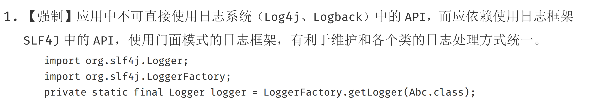
作为 Java 程序员，我想很多人都知道日志对于一个程序的重要性，尤其是 Web 应用。很多时候，日志可能是我们了解应用程序如何执行的唯一方式。
所以，日志在 Java Web 应用中至关重要，但是，很多人却以为日志输出只是一件简单的事情，所以会经常忽略和日志相关的问题。在接下来的几篇文章中，我会来介绍介绍这个容易被大家忽视，但同时也容易导致故障的知识点。
Java 语言之所以强大，就是因为他很成熟的生态体系。包括日志这一功能，就有很多成熟的开源框架可以被直接使用。
首先，我们先来看一下目前有哪些框架被广泛的使用。
常用日志框架
j.u.l
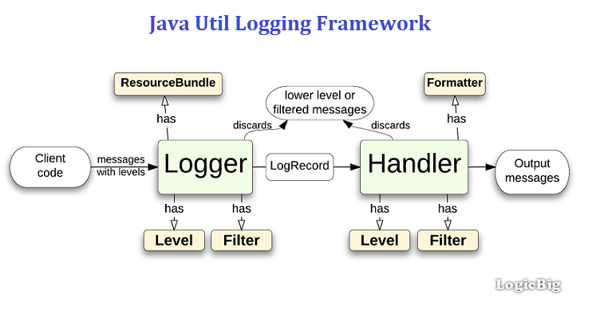 j.u.l 是 java.util.logging 包的简称，是 JDK 在 1.4 版本中引入的 Java 原生日志框架。Java Logging API 提供了七个日志级别用来控制输出。这七个级别分别是：SEVERE、WARNING、INFO、CONFIG、FINE、FINER、FINEST。
Log4j

Log4j 是 Apache 的一个开源项目，通过使用 Log4j，我们可以控制日志信息输送的目的地是控制台、文件、GUI 组件，甚至是套接口服务器、NT 的事件记录器、UNIX Syslog 守护进程等；我们也可以控制每一条日志的输出格式；通过定义每一条日志信息的级别，我们能够更加细致地控制日志的生成过程。最令人感兴趣的就是，这些可以通过一个配置文件来灵活地进行配置，而不需要修改应用的代码。
Log4 也有七种日志级别：OFF、FATAL、ERROR、WARN、INFO、DEBUG 和 TRACE。
LogBack

LogBack 也是一个很成熟的日志框架，其实 LogBack 和 Log4j 出自一个人之手，这个人就是 Ceki Gülcü。
logback 当前分成三个模块：logback-core,logback- classic 和 logback-access。logback-core 是其它两个模块的基础模块。logback-classic 是 Log4j 的一个改良版本。此外 logback-classic 完整实现 SLF4J API 使你可以很方便地更换成其它日记系统如 Log4j 或 j.u.l。logback-access 访问模块与 Servlet 容器集成提供通过 Http 来访问日记的功能。
Log4j2
前面介绍过 Log4j，这里要单独介绍一下 Log4j2，之所以要单独拿出来说，而没有和 Log4j 放在一起介绍，是因为作者认为，Log4j2 已经不仅仅是 Log4j 的一个升级版本了，而是从头到尾被重写的，这可以认为这其实就是完全不同的两个框架。
关于 Log4j2 解决了 Log4j 的哪些问题，Log4j2 相比较于 Log4j、j.u.l 和 logback 有哪些优势，我们在后续的文章中介绍。
前面介绍了四种日志框架，也就是说，我们想要在应用中打印日志的时候，可以使用以上四种类库中的任意一种。比如想要使用 Log4j，那么只要依赖 Log4j 的 jar 包，配置好配置文件并且在代码中使用其 API 打印日志就可以了。
不知道有多少人看过《阿里巴巴 Java 开发手册》，其中有一条规范做了『强制』要求：
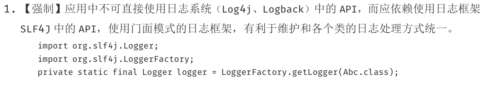
说好了以上四种常用的日志框架是给 Java 应用提供的方便进行记录日志的，那为什么又不让在应用中直接使用其 API 呢？这里面推崇使用的 SLF4J 是什么呢？所谓的门面模式又是什么东西呢？
什么是日志门面
日志门面，是门面模式的一个典型的应用。
门面模式（Facade Pattern），也称之为外观模式，其核心为：外部与一个子系统的通信必须通过一个统一的外观对象进行，使得子系统更易于使用。
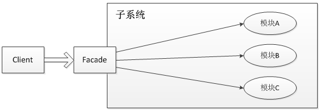
就像前面介绍的几种日志框架一样，每一种日志框架都有自己单独的 API，要使用对应的框架就要使用其对应的 API，这就大大的增加应用程序代码对于日志框架的耦合性。
为了解决这个问题，就是在日志框架和应用程序之间架设一个沟通的桥梁，对于应用程序来说，无论底层的日志框架如何变，都不需要有任何感知。只要门面服务做的足够好，随意换另外一个日志框架，应用程序不需要修改任意一行代码，就可以直接上线。
在软件开发领域有这样一句话：计算机科学领域的任何问题都可以通过增加一个间接的中间层来解决。而门面模式就是对于这句话的典型实践。
为什么需要日志门面
前面提到过一个重要的原因，就是为了在应用中屏蔽掉底层日志框架的具体实现。这样的话，即使有一天要更换代码的日志框架，只需要修改 jar 包，最多再改改日志输出相关的配置文件就可以了。这就是解除了应用和日志框架之间的耦合。
有人或许会问了，如果我换了日志框架了，应用是不需要改了，那日志门面不还是需要改的吗？
要回答这个问题，我们先来举一个例子，再把门面模式揉碎了重新解释一遍。
日志门面就像饭店的服务员，而日志框架就像是后厨的厨师。对于顾客这个应用来说，我到饭店点菜，我只需要告诉服务员我要一盘番茄炒蛋即可，我不关心后厨的所有事情。因为虽然主厨从把这道菜称之为『番茄炒蛋』A厨师换成了把这道菜称之为『西红柿炒鸡蛋』的 B 厨师。但是，顾客不需要关心，他只要下达『番茄炒蛋』的命令给到服务员，由服务员再去翻译给厨师就可以了。
所以，对于一个了解了"番茄炒蛋的多种叫法"的服务员来说，无论后厨如何换厨师，他都能准确的帮用户下单。
同理，对于一个设计的全面、完善的日志门面来说，他也应该是天然就兼容了多种日志框架的。所以，底层框架的更换，日志门面几乎不需要改动。
以上，就是日志门面的一个比较重要的好处——解耦。
常用日志门面
介绍过了日志门面的概念和好处之后，我们看看 Java 生态体系中有哪些好的日志门面的实现可供选择。
SLF4J

Java 简易日志门面（Simple Logging Facade for Java，缩写 SLF4J），是一套包装 Logging 框架的界面程式，以外观模式实现。可以在软件部署的时候决定要使用的 Logging 框架，目前主要支援的有 Java Logging API、Log4j 及 logback 等框架。以MIT 授权方式发布。
SLF4J 的作者就是 Log4j 的作者 Ceki Gülcü，他宣称 SLF4J 比 Log4j 更有效率，而且比 Apache Commons Logging (JCL) 简单、稳定。
其实，SLF4J 其实只是一个门面服务而已，他并不是真正的日志框架，真正的日志的输出相关的实现还是要依赖 Log4j、logback 等日志框架的。
由于 SLF4J 比较常用，这里多用一些篇幅，再来简单分析一下 SLF4J，主要和 Log4J 做一下对比。相比较于 Log4J 的 API，SLF4J 有以下几点优势：
- Log4j 提供 TRACE、DEBUG、INFO、WARN、ERROR 及 FATAL 六种纪录等级，但是 SLF4J 认为 ERROR 与 FATAL 并没有实质上的差别，所以拿掉了 FATAL 等级，只剩下其他五种。
- 大部分人在程序里面会去写 logger.error(exception)，其实这个时候 Log4j 会去把这个exception tostring。真正的写法应该是logger(message.exception)；而 SLF4J 就不会使得程序员犯这个错误。
- Log4j 间接的在鼓励程序员使用 string 相加的写法（这种写法是有性能问题的），而 SLF4J 就不会有这个问题，你可以使用 logger.error("{} is+serviceid",serviceid);
- 使用 SLF4J 可以方便的使用其提供的各种集体的实现的 jar。（类似commons-logger）
- 从 commons--logger 和 Log4j merge 非常方便，SLF4J 也提供了一个 swing 的 tools 来帮助大家完成这个 merge。
- 提供字串内容替换的功能，会比较有效率，说明如下：
// 传统的字符串产生方式，如果没有要记录Debug等级的信息，就会浪费时间在产生不必要的信息上
logger.debug("There are now " + count + " user accounts: " + userAccountList);
// 为了避免上述问题，我们可以先检查是不是开启了Debug信息记录功能，只是程序的编码会比较复杂
if (logger.isDebugEnabled()) {
logger.debug("There are now " + count + " user accounts: " + userAccountList);
}
// 如果Debug等级没有开启，则不会产生不必要的字符串，同时也能保持程序编码的简洁
logger.debug("There are now {} user accounts: {}", count, userAccountList);
- SLF4J 只支持 MDC，不支持 NDC。
commons-logging

Apache Commons Logging 是一个基于 Java 的日志记录实用程序，是用于日志记录和其他工具包的编程模型。它通过其他一些工具提供 API，日志实现和包装器实现。
commons-logging 和 SLF4J 的功能是类似的，主要是用来做日志门面的。提供更加好友的 API 工具。
小结
在 Java 生态体系中，围绕着日志，有很多成熟的解决方案。关于日志输出，主要有两类工具。
一类是日志框架，主要用来进行日志的输出的，比如输出到哪个文件，日志格式如何等。 另外一类是日志门面，主要一套通用的 API，用来屏蔽各个日志框架之间的差异的。
所以，对于 Java 工程师来说，关于日志工具的使用，最佳实践就是在应用中使用如 Log4j + SLF4J 这样的组合来进行日志输出。
这样做的最大好处，就是业务层的开发不需要关心底层日志框架的实现及细节，在编码的时候也不需要考虑日后更换框架所带来的成本。这也是门面模式所带来的好处。
综上，请不要在你的 Java 代码中出现任何 Log4j 等日志框架的 API 的使用，而是应该直接使用 SLF4J 这种日志门面。
为什么禁止开发人员使用 isSuccess 作为变量名
 

在日常开发中，我们会经常要在类中定义布尔类型的变量，比如在给外部系统提供一个 RPC 接口的时候，我们一般会定义一个字段表示本次请求是否成功的。
关于这个"本次请求是否成功"的字段的定义，其实是有很多种讲究和坑的，稍有不慎就会掉入坑里，作者在很久之前就遇到过类似的问题，本文就来围绕这个简单分析一下。到底该如何定一个布尔类型的成员变量。
一般情况下，我们可以有以下四种方式来定义一个布尔类型的成员变量：
boolean success
boolean isSuccess
Boolean success
Boolean isSuccess
以上四种定义形式，你日常开发中最常用的是哪种呢？到底哪一种才是正确的使用姿势呢？
通过观察我们可以发现，前两种和后两种的主要区别是变量的类型不同，前者使用的是 boolean，后者使用的是 Boolean。
另外，第一种和第三种在定义变量的时候，变量命名是 success，而另外两种使用 isSuccess 来命名的。
首先，我们来分析一下，到底应该是用 success 来命名，还是使用 isSuccess 更好一点。
success 还是 isSuccess
到底应该是用 success 还是 isSuccess 来给变量命名呢？从语义上面来讲，两种命名方式都可以讲的通，并且也都没有歧义。那么还有什么原则可以参考来让我们做选择呢。
在阿里巴巴 Java 开发手册中关于这一点，有过一个『强制性』规定：
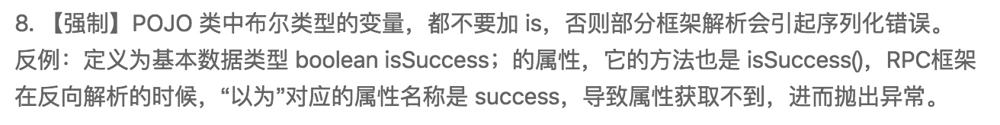
那么，为什么会有这样的规定呢？我们看一下 POJO 中布尔类型变量不同的命名有什么区别吧。
class Model1 {
private Boolean isSuccess;
public void setSuccess(Boolean success) {
isSuccess = success;
}
public Boolean getSuccess() {
return isSuccess;
}
}
class Model2 {
private Boolean success;
public Boolean getSuccess() {
return success;
}
public void setSuccess(Boolean success) {
this.success = success;
}
}
class Model3 {
private boolean isSuccess;
public boolean isSuccess() {
return isSuccess;
}
public void setSuccess(boolean success) {
isSuccess = success;
}
}
class Model4 {
private boolean success;
public boolean isSuccess() {
return success;
}
public void setSuccess(boolean success) {
this.success = success;
}
}
以上代码的 setter/getter 是使用 Intellij IDEA 自动生成的，仔细观察以上代码，你会发现以下规律：
- 基本类型自动生成的 getter 和 setter 方法，名称都是
isXXX()和setXXX()形式的。 - 包装类型自动生成的 getter 和 setter 方法，名称都是
getXXX()和setXXX()形式的。
既然，我们已经达成一致共识使用基本类型 boolean 来定义成员变量了，那么我们再来具体看下 Model3 和 Model4 中的 setter/getter 有何区别。
我们可以发现，虽然 Model3 和 Model4 中的成员变量的名称不同，一个是 success，另外一个是 isSuccess，但是他们自动生成的 getter 和 setter 方法名称都是isSuccess和setSuccess。
Java Bean 中关于 setter/getter 的规范
关于 Java Bean 中的 getter/setter 方法的定义其实是有明确的规定的，根据JavaBeans(TM) Specification规定，如果是普通的参数 propertyName，要以以下方式定义其 setter/getter：
public <PropertyType> get<PropertyName>();
public void set<PropertyName>(<PropertyType> a);
但是，布尔类型的变量 propertyName 则是单独定义的：
public boolean is<PropertyName>();
public void set<PropertyName>(boolean m);
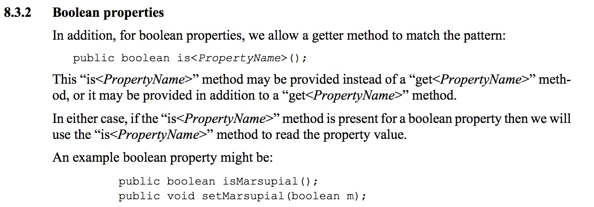
通过对照这份 JavaBeans 规范，我们发现，在 Model4 中，变量名为 isSuccess，如果严格按照规范定义的话，他的 getter 方法应该叫 isIsSuccess。但是很多 IDE 都会默认生成为 isSuccess。
那这样做会带来什么问题呢。
在一般情况下，其实是没有影响的。但是有一种特殊情况就会有问题，那就是发生序列化的时候。
序列化带来的影响
关于序列化和反序列化请参考Java 对象的序列化与反序列化。我们这里拿比较常用的 JSON 序列化来举例，看看看常用的 fastJson、jackson和 Gson 之间有何区别：
public class BooleanMainTest {
public static void main(String[] args) throws IOException {
//定一个Model3类型
Model3 model3 = new Model3();
model3.setSuccess(true);
//使用fastjson(1.2.16)序列化model3成字符串并输出
System.out.println("Serializable Result With fastjson :" + JSON.toJSONString(model3));
//使用Gson(2.8.5)序列化model3成字符串并输出
Gson gson =new Gson();
System.out.println("Serializable Result With Gson :" +gson.toJson(model3));
//使用jackson(2.9.7)序列化model3成字符串并输出
ObjectMapper om = new ObjectMapper();
System.out.println("Serializable Result With jackson :" +om.writeValueAsString(model3));
}
}
class Model3 implements Serializable {
private static final long serialVersionUID = 1836697963736227954L;
private boolean isSuccess;
public boolean isSuccess() {
return isSuccess;
}
public void setSuccess(boolean success) {
isSuccess = success;
}
public String getHollis(){
return "hollischuang";
}
}
以上代码的 Model3 中，只有一个成员变量即 isSuccess，三个方法，分别是 IDE 帮我们自动生成的 isSuccess 和 setSuccess，另外一个是作者自己增加的一个符合 getter 命名规范的方法。
以上代码输出结果：
Serializable Result With fastjson :{"hollis":"hollischuang","success":true}
Serializable Result With Gson :{"isSuccess":true}
Serializable Result With jackson :{"success":true,"hollis":"hollischuang"}
在 fastjson 和 Jackson 的结果中，原来类中的 isSuccess 字段被序列化成 success，并且其中还包含 hollis 值。而 Gson 中只有 isSuccess 字段。
我们可以得出结论：fastjson 和 Jackson 在把对象序列化成 json 字符串的时候，是通过反射遍历出该类中的所有 getter 方法，得到 getHollis 和 isSuccess，然后根据 JavaBeans 规则，他会认为这是两个属性 hollis 和 success 的值。直接序列化成 json:{"hollis":"hollischuang","success":true}
但是 Gson 并不是这么做的，他是通过反射遍历该类中的所有属性，并把其值序列化成 json:{"isSuccess":true}。
可以看到，由于不同的序列化工具，在进行序列化的时候使用到的策略是不一样的，所以，对于同一个类的同一个对象的序列化结果可能是不同的。
前面提到的关于对 getHollis 的序列化只是为了说明 fastjson、jackson 和 Gson 之间的序列化策略的不同，我们暂且把他放到一边，我们把他从 Model3 中删除后，重新执行下以上代码，得到结果：
Serializable Result With fastjson :{"success":true}
Serializable Result With Gson :{"isSuccess":true}
Serializable Result With jackson :{"success":true}
现在，不同的序列化框架得到的 json 内容并不相同，如果对于同一个对象，我使用 fastjson 进行序列化，再使用 Gson 反序列化会发生什么？
public class BooleanMainTest {
public static void main(String[] args) throws IOException {
Model3 model3 = new Model3();
model3.setSuccess(true);
Gson gson =new Gson();
System.out.println(gson.fromJson(JSON.toJSONString(model3),Model3.class));
}
}
class Model3 implements Serializable {
private static final long serialVersionUID = 1836697963736227954L;
private boolean isSuccess;
public boolean isSuccess() {
return isSuccess;
}
public void setSuccess(boolean success) {
isSuccess = success;
}
@Override
public String toString() {
return new StringJoiner(", ", Model3.class.getSimpleName() + "[", "]")
.add("isSuccess=" + isSuccess)
.toString();
}
}
以上代码，输出结果：
Model3[isSuccess=false]
这和我们预期的结果完全相反，原因是因为 JSON 框架通过扫描所有的getter后发现有一个 isSuccess 方法，然后根据 JavaBeans 的规范，解析出变量名为 success，把 model 对象序列化城字符串后内容为{"success":true}。
根据{"success":true}这个 json 串，Gson 框架在通过解析后，通过反射寻找 Model 类中的 success 属性，但是 Model 类中只有 isSuccess 属性，所以，最终反序列化后的 Model 类的对象中，isSuccess 则会使用默认值 false。
但是，一旦以上代码发生在生产环境，这绝对是一个致命的问题。
所以，作为开发者，我们应该想办法尽量避免这种问题的发生，对于 POJO 的设计者来说，只需要做简单的一件事就可以解决这个问题了，那就是把 isSuccess 改为 success。这样，该类里面的成员变量时 success， getter 方法是 isSuccess，这是完全符合 JavaBeans 规范的。无论哪种序列化框架，执行结果都一样。就从源头避免了这个问题。
引用以下 R 大关于阿里巴巴 Java 开发手册这条规定的评价（https://www.zhihu.com/question/55642203）：
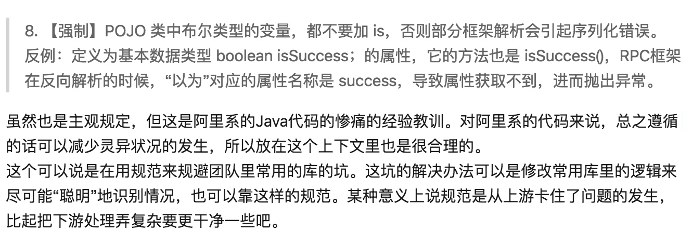
所以，在定义 POJO 中的布尔类型的变量时，不要使用 isSuccess 这种形式，而要直接使用 success！
Boolean 还是 boolean？
前面我们介绍完了在 success 和 isSuccess 之间如何选择，那么排除错误答案后，备选项还剩下：
boolean success
Boolean success
那么，到底应该是用 Boolean 还是 boolean 来给定一个布尔类型的变量呢？
我们知道，boolean 是基本数据类型，而 Boolean 是包装类型。关于基本数据类型和包装类之间的关系和区别请参考一文读懂什么是Java中的自动拆装箱
那么，在定义一个成员变量的时候到底是使用包装类型更好还是使用基本数据类型呢？
我们来看一段简单的代码
/**
* @author Hollis
*/
public class BooleanMainTest {
public static void main(String[] args) {
Model model1 = new Model();
System.out.println("default model : " + model1);
}
}
class Model {
/**
* 定一个Boolean类型的success成员变量
*/
private Boolean success;
/**
* 定一个boolean类型的failure成员变量
*/
private boolean failure;
/**
* 覆盖toString方法，使用Java 8 的StringJoiner
*/
@Override
public String toString() {
return new StringJoiner(", ", Model.class.getSimpleName() + "[", "]")
.add("success=" + success)
.add("failure=" + failure)
.toString();
}
}
以上代码输出结果为：
default model : Model[success=null, failure=false]
可以看到，当我们没有设置 Model 对象的字段的值的时候，Boolean 类型的变量会设置默认值为null，而 boolean 类型的变量会设置默认值为false。
即对象的默认值是null，boolean 基本数据类型的默认值是false。
在阿里巴巴 Java 开发手册中，对于 POJO 中如何选择变量的类型也有着一些规定：
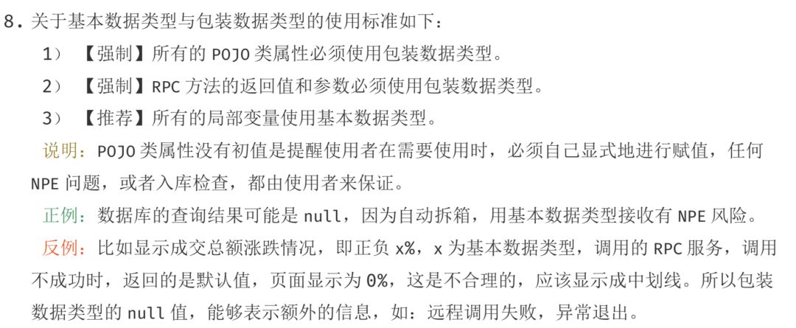
这里建议我们使用包装类型，原因是什么呢？
举一个扣费的例子，我们做一个扣费系统，扣费时需要从外部的定价系统中读取一个费率的值，我们预期该接口的返回值中会包含一个浮点型的费率字段。当我们取到这个值得时候就使用公式：金额*费率=费用 进行计算，计算结果进行划扣。
如果由于计费系统异常，他可能会返回个默认值，如果这个字段是 Double 类型的话，该默认值为 null，如果该字段是 double 类型的话，该默认值为 0.0。
如果扣费系统对于该费率返回值没做特殊处理的话，拿到 null 值进行计算会直接报错，阻断程序。拿到 0.0 可能就直接进行计算，得出接口为 0 后进行扣费了。这种异常情况就无法被感知。
这种使用包装类型定义变量的方式，通过异常来阻断程序，进而可以被识别到这种线上问题。如果使用基本数据类型的话，系统可能不会报错，进而认为无异常。
以上，就是建议在 POJO 和 RPC 的返回值中使用包装类型的原因。
但是关于这一点，作者之前也有过不同的看法：对于布尔类型的变量，我认为可以和其他类型区分开来，作者并不认为使用 null 进而导致 NPE 是一种最好的实践。因为布尔类型只有 true/false 两种值，我们完全可以和外部调用方约定好当返回值为 false 时的明确语义。
后来，作者单独和《阿里巴巴 Java 开发手册》、《码出高效》的作者——孤尽 单独 1V1(qing) Battle(jiao)了一下。最终达成共识，还是尽量使用包装类型。
但是，作者还是想强调一个我的观点，尽量避免在你的代码中出现不确定的 null 值。
null 何罪之有？
关于 null 值的使用，我在使用 Optional 避免NullPointerException、9 Things about Null in Java等文中就介绍过。
null是很模棱两可的，很多时候会导致令人疑惑的的错误，很难去判断返回一个null代表着什么意思。
图灵奖得主 Tony Hoare 曾经公开表达过null是一个糟糕的设计。

我把 null 引用称为自己的十亿美元错误。它的发明是在 1965 年，那时我用一个面向对象语言( ALGOL W )设计了第一个全面的引用类型系统。我的目的是确保所有引用的使用都是绝对安全的，编译器会自动进行检查。但是我未能抵御住诱惑，加入了 Null 引用，仅仅是因为实现起来非常容易。它导致了数不清的错误、漏洞和系统崩溃，可能在之后 40 年中造成了十亿美元的损失。
当我们在设计一个接口的时候，对于接口的返回值的定义，尽量避免使用 Boolean 类型来定义。大多数情况下，别人使用我们的接口返回值时可能用if(response.isSuccess){}else{}的方式，如果我们由于忽略没有设置success字段的值，就可能导致 NPE（java.lang.NullPointerException），这明显是我们不希望看到的。
所以，当我们要定义一个布尔类型的成员变量时，尽量选择 boolean，而不是 Boolean。当然，编程中并没有绝对。
小结
本文围绕布尔类型的变量定义的类型和命名展开了介绍，最终我们可以得出结论，在定义一个布尔类型的变量，尤其是一个给外部提供的接口返回值时，要使用 success 来命名，阿里巴巴 Java 开发手册建议使用封装类来定义 POJO 和 RPC 返回值中的变量。但是这不意味着可以随意的使用 null，我们还是要尽量避免出现对 null 的处理的。
为什么禁止开发人员修改 serialVersionUID 字段的值
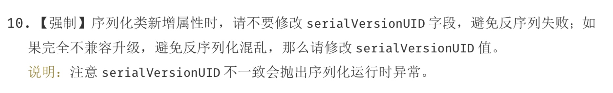
序列化是一种对象持久化的手段。普遍应用在网络传输、RMI 等场景中。类通过实现 java.io.Serializable 接口以启用其序列化功能。
在我的博客中，其实已经有多篇文章介绍过序列化了，对序列化的基础知识不够了解的朋友可以参考以下几篇文章：
Java 对象的序列化与反序列化 深入分析 Java 的序列化与反序列化 单例与序列化的那些事儿
在这几篇文章中，我分别介绍过了序列化涉及到的类和接口、如何自定义序列化策略、transient 关键字和序列化的关系等，还通过学习 ArrayList 对序列化的实现源码深入学习了序列化。并且还拓展分析了一下序列化对单例的影响等。
但是，还有一个知识点并未展开介绍，那就是关于serialVersionUID 。这个字段到底有什么用？如果不设置会怎么样？为什么《阿里巴巴 Java 开发手册》中有以下规定：
 

背景知识
Serializable 和 Externalizable
类通过实现 java.io.Serializable 接口以启用其序列化功能。**未实现此接口的类将无法进行序列化或反序列化。**可序列化类的所有子类型本身都是可序列化的。
如果读者看过Serializable的源码，就会发现，他只是一个空的接口，里面什么东西都没有。**Serializable 接口没有方法或字段，仅用于标识可序列化的语义。**但是，如果一个类没有实现这个接口，想要被序列化的话，就会抛出java.io.NotSerializableException异常。
它是怎么保证只有实现了该接口的方法才能进行序列化与反序列化的呢？
原因是在执行序列化的过程中，会执行到以下代码：
if (obj instanceof String) {
writeString((String) obj, unshared);
} else if (cl.isArray()) {
writeArray(obj, desc, unshared);
} else if (obj instanceof Enum) {
writeEnum((Enum<?>) obj, desc, unshared);
} else if (obj instanceof Serializable) {
writeOrdinaryObject(obj, desc, unshared);
} else {
if (extendedDebugInfo) {
throw new NotSerializableException(
cl.getName() + "\n" + debugInfoStack.toString());
} else {
throw new NotSerializableException(cl.getName());
}
}
在进行序列化操作时，会判断要被序列化的类是否是Enum、Array和Serializable类型，如果都不是则直接抛出NotSerializableException。
Java中还提供了Externalizable接口，也可以实现它来提供序列化能力。
Externalizable继承自Serializable，该接口中定义了两个抽象方法：writeExternal()与readExternal()。
当使用Externalizable接口来进行序列化与反序列化的时候需要开发人员重写writeExternal()与readExternal()方法。否则所有变量的值都会变成默认值。
transient
transient 关键字的作用是控制变量的序列化，在变量声明前加上该关键字，可以阻止该变量被序列化到文件中，在被反序列化后，transient 变量的值被设为初始值，如 int 型的是 0，对象型的是 null。
自定义序列化策略
在序列化过程中，如果被序列化的类中定义了writeObject 和 readObject 方法，虚拟机会试图调用对象类里的 writeObject 和 readObject 方法，进行用户自定义的序列化和反序列化。
如果没有这样的方法，则默认调用是 ObjectOutputStream 的 defaultWriteObject 方法以及 ObjectInputStream 的 defaultReadObject 方法。
用户自定义的 writeObject 和 readObject 方法可以允许用户控制序列化的过程，比如可以在序列化的过程中动态改变序列化的数值。
所以，对于一些特殊字段需要定义序列化的策略的时候，可以考虑使用transient修饰，并自己重写writeObject 和 readObject 方法，如java.util.ArrayList中就有这样的实现。
我们随便找几个Java中实现了序列化接口的类，如String、Integer等，我们可以发现一个细节，那就是这些类除了实现了Serializable外，还定义了一个serialVersionUID
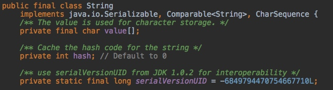
那么，到底什么是serialVersionUID呢？为什么要设置这样一个字段呢？
什么是 serialVersionUID
序列化是将对象的状态信息转换为可存储或传输的形式的过程。我们都知道，Java 对象是保存在 JVM 的堆内存中的，也就是说，如果 JVM 堆不存在了，那么对象也就跟着消失了。
而序列化提供了一种方案，可以让你在即使 JVM 停机的情况下也能把对象保存下来的方案。就像我们平时用的 U 盘一样。把 Java 对象序列化成可存储或传输的形式（如二进制流），比如保存在文件中。这样，当再次需要这个对象的时候，从文件中读取出二进制流，再从二进制流中反序列化出对象。
虚拟机是否允许反序列化，不仅取决于类路径和功能代码是否一致，一个非常重要的一点是两个类的序列化 ID 是否一致，这个所谓的序列化 ID，就是我们在代码中定义的serialVersionUID。
如果 serialVersionUID 变了会怎样
我们举个例子吧，看看如果serialVersionUID被修改了会发生什么？
public class SerializableDemo1 {
public static void main(String[] args) {
//Initializes The Object
User1 user = new User1();
user.setName("hollis");
//Write Obj to File
ObjectOutputStream oos = null;
try {
oos = new ObjectOutputStream(new FileOutputStream("tempFile"));
oos.writeObject(user);
} catch (IOException e) {
e.printStackTrace();
} finally {
IOUtils.closeQuietly(oos);
}
}
}
class User1 implements Serializable {
private static final long serialVersionUID = 1L;
private String name;
public String getName() {
return name;
}
public void setName(String name) {
this.name = name;
}
}
我们先执行以上代码，把一个 User1 对象写入到文件中。然后我们修改一下 User1 类，把serialVersionUID的值改为2L。
class User1 implements Serializable {
private static final long serialVersionUID = 2L;
private String name;
public String getName() {
return name;
}
public void setName(String name) {
this.name = name;
}
}
然后执行以下代码，把文件中的对象反序列化出来：
public class SerializableDemo2 {
public static void main(String[] args) {
//Read Obj from File
File file = new File("tempFile");
ObjectInputStream ois = null;
try {
ois = new ObjectInputStream(new FileInputStream(file));
User1 newUser = (User1) ois.readObject();
System.out.println(newUser);
} catch (IOException e) {
e.printStackTrace();
} catch (ClassNotFoundException e) {
e.printStackTrace();
} finally {
IOUtils.closeQuietly(ois);
try {
FileUtils.forceDelete(file);
} catch (IOException e) {
e.printStackTrace();
}
}
}
}
执行结果如下：
java.io.InvalidClassException: com.hollis.User1; local class incompatible: stream classdesc serialVersionUID = 1, local class serialVersionUID = 2
可以发现，以上代码抛出了一个java.io.InvalidClassException，并且指出serialVersionUID不一致。
这是因为，在进行反序列化时，JVM 会把传来的字节流中的serialVersionUID与本地相应实体类的serialVersionUID进行比较，如果相同就认为是一致的，可以进行反序列化，否则就会出现序列化版本不一致的异常，即是InvalidCastException。
这也是《阿里巴巴 Java 开发手册》中规定，在兼容性升级中，在修改类的时候，不要修改serialVersionUID的原因。除非是完全不兼容的两个版本。所以，serialVersionUID其实是验证版本一致性的。
如果读者感兴趣，可以把各个版本的 JDK 代码都拿出来看一下，那些向下兼容的类的serialVersionUID是没有变化过的。比如 String 类的serialVersionUID一直都是-6849794470754667710L。
但是，作者认为，这个规范其实还可以再严格一些，那就是规定：
如果一个类实现了Serializable接口，就必须手动添加一个private static final long serialVersionUID变量，并且设置初始值。
为什么要明确定一个 serialVersionUID
如果我们没有在类中明确的定义一个serialVersionUID的话，看看会发生什么。
尝试修改上面的 demo 代码，先使用以下类定义一个对象，该类中不定义serialVersionUID，将其写入文件。
class User1 implements Serializable {
private String name;
public String getName() {
return name;
}
public void setName(String name) {
this.name = name;
}
}
然后我们修改 User1 类，向其中增加一个属性。在尝试将其从文件中读取出来，并进行反序列化。
class User1 implements Serializable {
private String name;
private int age;
public String getName() {
return name;
}
public void setName(String name) {
this.name = name;
}
public int getAge() {
return age;
}
public void setAge(int age) {
this.age = age;
}
}
执行结果： java.io.InvalidClassException: com.hollis.User1; local class incompatible: stream classdesc serialVersionUID = -2986778152837257883, local class serialVersionUID = 7961728318907695402
同样，抛出了InvalidClassException，并且指出两个serialVersionUID不同，分别是-2986778152837257883和7961728318907695402。
从这里可以看出，系统自己添加了一个serialVersionUID。
所以，一旦类实现了Serializable，就建议明确的定义一个serialVersionUID。不然在修改类的时候，就会发生异常。
serialVersionUID`有两种显示的生成方式：
一是默认的 1L，比如：`private static final long serialVersionUID = 1L;`
二是根据类名、接口名、成员方法及属性等来生成一个64位的哈希字段，比如：
`private static final long serialVersionUID = xxxxL;
后面这种方式，可以借助 IDE 生成，后面会介绍。
背后原理
知其然，要知其所以然，我们再来看看源码，分析一下为什么serialVersionUID改变的时候会抛异常？在没有明确定义的情况下，默认的serialVersionUID是怎么来的？
为了简化代码量，反序列化的调用链如下：
ObjectInputStream.readObject -> readObject0 -> readOrdinaryObject -> readClassDesc -> readNonProxyDesc -> ObjectStreamClass.initNonProxy
在initNonProxy中 ，关键代码如下：
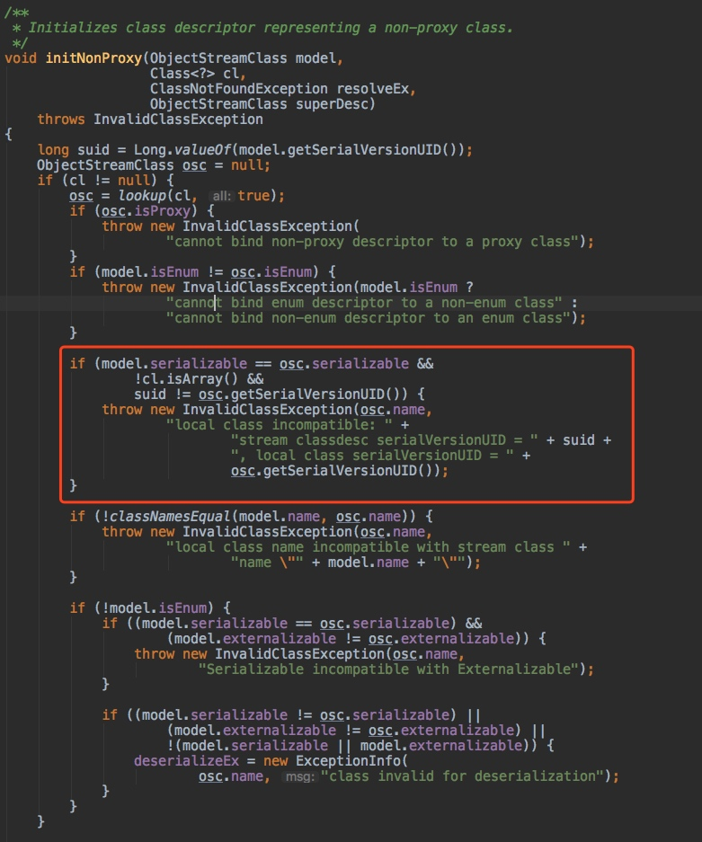
在反序列化过程中，对serialVersionUID做了比较，如果发现不相等，则直接抛出异常。
深入看一下getSerialVersionUID方法：
public long getSerialVersionUID() {
// REMIND: synchronize instead of relying on volatile?
if (suid == null) {
suid = AccessController.doPrivileged(
new PrivilegedAction<Long>() {
public Long run() {
return computeDefaultSUID(cl);
}
}
);
}
return suid.longValue();
}
在没有定义serialVersionUID的时候，会调用computeDefaultSUID 方法，生成一个默认的serialVersionUID。
这也就找到了以上两个问题的根源，其实是代码中做了严格的校验。
IDEA 提示
为了确保我们不会忘记定义serialVersionUID，可以调节一下 Intellij IDEA 的配置，在实现Serializable接口后，如果没定义serialVersionUID的话，IDEA（eclipse 一样）会进行提示：  

并且可以一键生成一个：
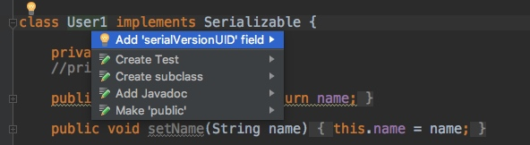
当然，这个配置并不是默认生效的，需要手动到 IDEA 中设置一下：
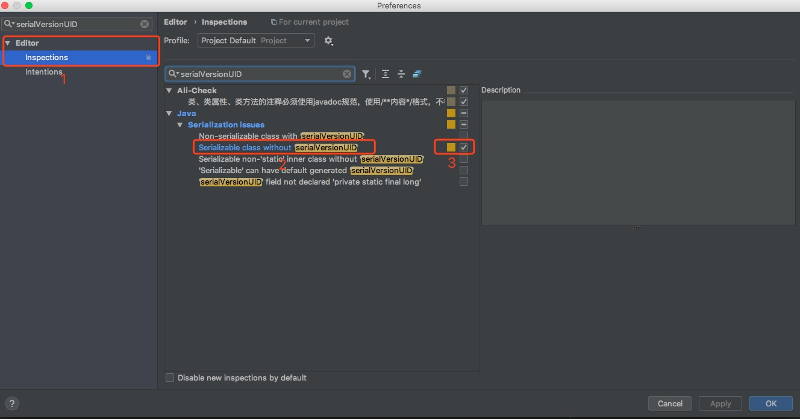
在图中标号 3 的地方（Serializable class without serialVersionUID的配置），打上勾，保存即可。
小结
serialVersionUID是用来验证版本一致性的。所以在做兼容性升级的时候，不要改变类中serialVersionUID的值。
如果一个类实现了 Serializable 接口，一定要记得定义serialVersionUID，否则会发生异常。可以在 IDE 中通过设置，让他帮忙提示，并且可以一键快速生成一个serialVersionUID。
之所以会发生异常，是因为反序列化过程中做了校验，并且如果没有明确定义的话，会根据类的属性自动生成一个。
为什么不建议在 for 循环中使用"+"进行字符串拼接
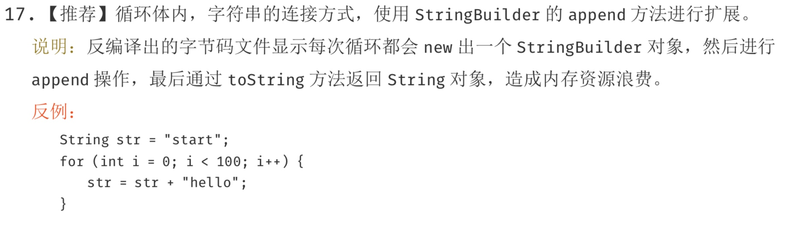
字符串，是 Java 中最常用的一个数据类型了。关于字符串的知识，作者已经发表过几篇文章介绍过很多，如：
三张图彻底了解JDK 6和JDK 7中substring的原理及区别
Java中的Switch对整型、字符型、字符串型的具体实现细节
本文，也是对于 Java 中字符串相关知识的一个补充，主要来介绍一下字符串拼接相关的知识。本文基于 jdk1.8.0_181。
字符串拼接
字符串拼接是我们在 Java 代码中比较经常要做的事情，就是把多个字符串拼接到一起。
我们都知道，String 是 Java 中一个不可变的类，所以他一旦被实例化就无法被修改。
不可变类的实例一旦创建，其成员变量的值就不能被修改。这样设计有很多好处，比如可以缓存 hashcode、使用更加便利以及更加安全等。
但是，既然字符串是不可变的，那么字符串拼接又是怎么回事呢？
字符串不变性与字符串拼接
其实，所有的所谓字符串拼接，都是重新生成了一个新的字符串。下面一段字符串拼接代码：
<pre><code class="language-text">String s = "abcd";
s = s.concat("ef");
</code></pre>
其实最后我们得到的s已经是一个新的字符串了。如下图
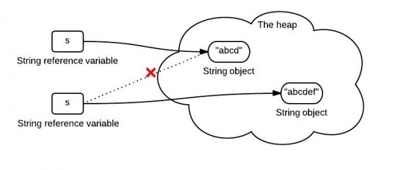
s 中保存的是一个重新创建出来的 String 对象的引用。
那么，在 Java 中到底如何进行字符串拼接呢？字符串拼接有很多种方式，这里简单介绍几种比较常用的。
使用+拼接字符串
在 Java 中，拼接字符串最简单的方式就是直接使用符号+来拼接。如：
String wechat = "Hollis";
String introduce = "每日更新Java相关技术文章";
String hollis = wechat + "," + introduce;
这里要特别说明一点，有人把 Java 中使用+拼接字符串的功能理解为运算符重载。其实并不是，Java 是不支持运算符重载的。这其实只是 Java 提供的一个语法糖。后面再详细介绍。
运算符重载：在计算机程序设计中，运算符重载（英语：operator overloading）是多态的一种。运算符重载，就是对已有的运算符重新进行定义，赋予其另一种功能，以适应不同的数据类型。
语法糖：语法糖（Syntactic sugar），也译为糖衣语法，是由英国计算机科学家彼得·兰丁发明的一个术语，指计算机语言中添加的某种语法，这种语法对语言的功能没有影响，但是更方便程序员使用。语法糖让程序更加简洁，有更高的可读性。
concat
除了使用+拼接字符串之外，还可以使用 String 类中的方法 concat 方法来拼接字符串。如：
String wechat = "Hollis";
String introduce = "每日更新Java相关技术文章";
String hollis = wechat.concat(",").concat(introduce);
StringBuffer
关于字符串，Java 中除了定义了一个可以用来定义字符串常量的String类以外，还提供了可以用来定义字符串变量的StringBuffer类，它的对象是可以扩充和修改的。
使用StringBuffer可以方便的对字符串进行拼接。如：
StringBuffer wechat = new StringBuffer("Hollis");
String introduce = "每日更新Java相关技术文章";
StringBuffer hollis = wechat.append(",").append(introduce);
StringBuilder
除了StringBuffer以外，还有一个类StringBuilder也可以使用，其用法和StringBuffer类似。如：
StringBuilder wechat = new StringBuilder("Hollis");
String introduce = "每日更新Java相关技术文章";
StringBuilder hollis = wechat.append(",").append(introduce);
StringUtils.join
除了 JDK 中内置的字符串拼接方法，还可以使用一些开源类库中提供的字符串拼接方法名，如apache.commons中提供的StringUtils类，其中的join方法可以拼接字符串。
String wechat = "Hollis";
String introduce = "每日更新Java相关技术文章";
System.out.println(StringUtils.join(wechat, ",", introduce));
这里简单说一下，StringUtils 中提供的 join 方法，最主要的功能是：将数组或集合以某拼接符拼接到一起形成新的字符串，如：
String []list ={"Hollis","每日更新Java相关技术文章"};
String result= StringUtils.join(list,",");
System.out.println(result);
//结果：Hollis,每日更新Java相关技术文章
并且，Java8 中的 String 类中也提供了一个静态的 join 方法，用法和 StringUtils.join 类似。
以上就是比较常用的五种在 Java 种拼接字符串的方式，那么到底哪种更好用呢？为什么阿里巴巴 Java 开发手册中不建议在循环体中使用+进行字符串拼接呢？
 

(阿里巴巴 Java 开发手册中关于字符串拼接的规约)
使用+拼接字符串的实现原理
前面提到过，使用+拼接字符串，其实只是 Java 提供的一个语法糖， 那么，我们就来解一解这个语法糖，看看他的内部原理到底是如何实现的。
还是这样一段代码。我们把他生成的字节码进行反编译，看看结果。
String wechat = "Hollis";
String introduce = "每日更新Java相关技术文章";
String hollis = wechat + "," + introduce;
反编译后的内容如下，反编译工具为jad。
String wechat = "Hollis";
String introduce = "\u6BCF\u65E5\u66F4\u65B0Java\u76F8\u5173\u6280\u672F\u6587\u7AE0";//每日更新Java相关技术文章
String hollis = (new StringBuilder()).append(wechat).append(",").append(introduce).toString();
通过查看反编译以后的代码，我们可以发现，原来字符串常量在拼接过程中，是将 String 转成了 StringBuilder 后，使用其 append 方法进行处理的。
那么也就是说，Java 中的+对字符串的拼接，其实现原理是使用StringBuilder.append。
concat 是如何实现的
我们再来看一下 concat 方法的源代码，看一下这个方法又是如何实现的。
public String concat(String str) {
int otherLen = str.length();
if (otherLen == 0) {
return this;
}
int len = value.length;
char buf[] = Arrays.copyOf(value, len + otherLen);
str.getChars(buf, len);
return new String(buf, true);
}
这段代码首先创建了一个字符数组，长度是已有字符串和待拼接字符串的长度之和，再把两个字符串的值复制到新的字符数组中，并使用这个字符数组创建一个新的 String 对象并返回。
通过源码我们也可以看到，经过 concat 方法，其实是 new 了一个新的 String，这也就呼应到前面我们说的字符串的不变性问题上了。
StringBuffer 和 StringBuilder
接下来我们看看StringBuffer和StringBuilder的实现原理。
和String类类似，StringBuilder类也封装了一个字符数组，定义如下：
char[] value;
与String不同的是，它并不是final的，所以他是可以修改的。另外，与String不同，字符数组中不一定所有位置都已经被使用，它有一个实例变量，表示数组中已经使用的字符个数，定义如下：
int count;
其 append 源码如下：
public StringBuilder append(String str) {
super.append(str);
return this;
}
该类继承了AbstractStringBuilder类，看下其append方法：
public AbstractStringBuilder append(String str) {
if (str == null)
return appendNull();
int len = str.length();
ensureCapacityInternal(count + len);
str.getChars(0, len, value, count);
count += len;
return this;
}
append 会直接拷贝字符到内部的字符数组中，如果字符数组长度不够，会进行扩展。
StringBuffer和StringBuilder类似，最大的区别就是StringBuffer是线程安全的，看一下StringBuffer的append方法。
public synchronized StringBuffer append(String str) {
toStringCache = null;
super.append(str);
return this;
}
该方法使用synchronized进行声明，说明是一个线程安全的方法。而StringBuilder则不是线程安全的。
StringUtils.join 是如何实现的
通过查看StringUtils.join的源代码，我们可以发现，其实他也是通过StringBuilder来实现的。
public static String join(final Object[] array, String separator, final int startIndex, final int endIndex) {
if (array == null) {
return null;
}
if (separator == null) {
separator = EMPTY;
}
// endIndex - startIndex > 0: Len = NofStrings *(len(firstString) + len(separator))
// (Assuming that all Strings are roughly equally long)
final int noOfItems = endIndex - startIndex;
if (noOfItems <= 0) {
return EMPTY;
}
final StringBuilder buf = new StringBuilder(noOfItems * 16);
for (int i = startIndex; i < endIndex; i++) {
if (i > startIndex) {
buf.append(separator);
}
if (array[i] != null) {
buf.append(array[i]);
}
}
return buf.toString();
}
效率比较
既然有这么多种字符串拼接的方法，那么到底哪一种效率最高呢？我们来简单对比一下。
long t1 = System.currentTimeMillis();
//这里是初始字符串定义
for (int i = 0; i < 50000; i++) {
//这里是字符串拼接代码
}
long t2 = System.currentTimeMillis();
System.out.println("cost:" + (t2 - t1));
我们使用形如以上形式的代码，分别测试下五种字符串拼接代码的运行时间。得到结果如下：
+ cost:5119
StringBuilder cost:3
StringBuffer cost:4
concat cost:3623
StringUtils.join cost:25726
从结果可以看出，用时从短到长的对比是：
StringBuilder`<`StringBuffer`<`concat`<`+`<`StringUtils.join
StringBuffer在StringBuilder的基础上，做了同步处理，所以在耗时上会相对多一些。
StringUtils.join 也是使用了 StringBuilder，并且其中还是有很多其他操作，所以耗时较长，这个也容易理解。其实 StringUtils.join 更擅长处理字符串数组或者列表的拼接。
那么问题来了，前面我们分析过，其实使用+拼接字符串的实现原理也是使用的StringBuilder，那为什么结果相差这么多，高达 1000 多倍呢？
我们再把以下代码反编译下：
long t1 = System.currentTimeMillis();
String str = "hollis";
for (int i = 0; i < 50000; i++) {
String s = String.valueOf(i);
str += s;
}
long t2 = System.currentTimeMillis();
System.out.println("+ cost:" + (t2 - t1));
反编译后代码如下：
long t1 = System.currentTimeMillis();
String str = "hollis";
for(int i = 0; i < 50000; i++)
{
String s = String.valueOf(i);
str = (new StringBuilder()).append(str).append(s).toString();
}
long t2 = System.currentTimeMillis();
System.out.println((new StringBuilder()).append("+ cost:").append(t2 - t1).toString());
我们可以看到，反编译后的代码，在for循环中，每次都是new了一个StringBuilder，然后再把String转成StringBuilder，再进行append。
而频繁的新建对象当然要耗费很多时间了，不仅仅会耗费时间，频繁的创建对象，还会造成内存资源的浪费。
所以，阿里巴巴 Java 开发手册建议：循环体内，字符串的连接方式，使用 StringBuilder 的 append 方法进行扩展。而不要使用+。
小结
本文介绍了什么是字符串拼接，虽然字符串是不可变的，但是还是可以通过新建字符串的方式来进行字符串的拼接。
常用的字符串拼接方式有五种，分别是使用+、使用concat、使用StringBuilder、使用StringBuffer以及使用StringUtils.join。
由于字符串拼接过程中会创建新的对象，所以如果要在一个循环体中进行字符串拼接，就要考虑内存问题和效率问题。
因此，经过对比，我们发现，直接使用StringBuilder的方式是效率最高的。因为StringBuilder天生就是设计来定义可变字符串和字符串的变化操作的。
但是，还要强调的是：
- 如果不是在循环体中进行字符串拼接的话，直接使用
+就好了。 - 如果在并发场景中进行字符串拼接的话，要使用
StringBuffer来代替StringBuilder。
为什么禁止在 foreach 循环里进行元素的 remove/add 操作
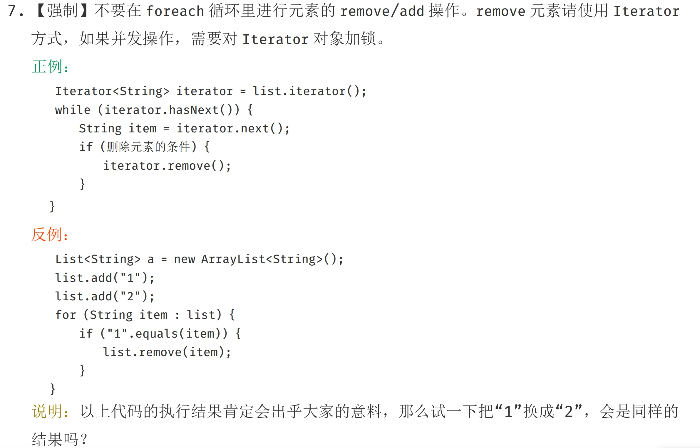
foreach 循环
Foreach 循环（Foreach loop）是计算机编程语言中的一种控制流程语句，通常用来循环遍历数组或集合中的元素。
Java 语言从 JDK 1.5.0 开始引入 foreach 循环。在遍历数组、集合方面， foreach 为开发人员提供了极大的方便。
foreach 语法格式如下：
for(元素类型t 元素变量x : 遍历对象obj){
引用了x的java语句;
}
以下实例演示了普通 for 循环和 foreach 循环使用：
public static void main(String[] args) {
// 使用ImmutableList初始化一个List
List<String> userNames = ImmutableList.of("Hollis", "hollis", "HollisChuang", "H");
System.out.println("使用for循环遍历List");
for (int i = 0; i < userNames.size(); i++) {
System.out.println(userNames.get(i));
}
System.out.println("使用foreach遍历List");
for (String userName : userNames) {
System.out.println(userName);
}
}
以上代码运行输出结果为：
使用for循环遍历List
Hollis
hollis
HollisChuang
H
使用foreach遍历List
Hollis
hollis
HollisChuang
H
可以看到，使用 foreach 语法遍历集合或者数组的时候，可以起到和普通 for 循环同样的效果，并且代码更加简洁。所以，foreach 循环也通常也被称为增强 for 循环。
但是，作为一个合格的程序员，我们不仅要知道什么是增强for循环，还需要知道增强 for 循环的原理是什么？
其实，增强 for 循环也是 Java 给我们提供的一个语法糖，如果将以上代码编译后的 class 文件进行反编译（使用 jad 工具）的话，可以得到以下代码：
Iterator iterator = userNames.iterator();
do
{
if(!iterator.hasNext())
break;
String userName = (String)iterator.next();
if(userName.equals("Hollis"))
userNames.remove(userName);
} while(true);
System.out.println(userNames);
可以发现，原本的增强 for 循环，其实是依赖了 while 循环和 Iterator 实现的。（请记住这种实现方式，后面会用到！）
问题重现
规范中指出不让我们在 foreach 循环中对集合元素做 add/remove 操作，那么，我们尝试着做一下看看会发生什么问题。
// 使用双括弧语法（double-brace syntax）建立并初始化一个List
List<String> userNames = new ArrayList<String>() {{
add("Hollis");
add("hollis");
add("HollisChuang");
add("H");
}};
for (int i = 0; i < userNames.size(); i++) {
if (userNames.get(i).equals("Hollis")) {
userNames.remove(i);
}
}
System.out.println(userNames);
以上代码，首先使用双括弧语法（double-brace syntax）建立并初始化一个 List，其中包含四个字符串，分别是 Hollis、hollis、HollisChuang 和 H。
然后使用普通 for 循环对 List 进行遍历，删除 List 中元素内容等于 Hollis 的元素。然后输出 List，输出结果如下：
[hollis, HollisChuang, H]
以上是哪使用普通的 for 循环在遍历的同时进行删除，那么，我们再看下，如果使用增强 for 循环的话会发生什么：
List<String> userNames = new ArrayList<String>() {{
add("Hollis");
add("hollis");
add("HollisChuang");
add("H");
}};
for (String userName : userNames) {
if (userName.equals("Hollis")) {
userNames.remove(userName);
}
}
System.out.println(userNames);
以上代码，使用增强 for 循环遍历元素，并尝试删除其中的 Hollis 字符串元素。运行以上代码，会抛出以下异常：
java.util.ConcurrentModificationException
同样的，读者可以尝试下在增强 for 循环中使用 add 方法添加元素，结果也会同样抛出该异常。
之所以会出现这个异常，是因为触发了一个 Java 集合的错误检测机制——fail-fast 。
fail-fast
接下来，我们就来分析下在增强 for 循环中 add/remove 元素的时候会抛出 java.util.ConcurrentModificationException 的原因，即解释下到底什么是 fail-fast 进制，fail-fast 的原理等。
fail-fast，即快速失败，它是 Java 集合的一种错误检测机制。当多个线程对集合（非f ail-safe 的集合类）进行结构上的改变的操作时，有可能会产生 fail-fast 机制，这个时候就会抛出ConcurrentModificationException（当方法检测到对象的并发修改，但不允许这种修改时就抛出该异常）。
同时需要注意的是，即使不是多线程环境，如果单线程违反了规则，同样也有可能会抛出改异常。
那么，在增强 for 循环进行元素删除，是如何违反了规则的呢？
要分析这个问题，我们先将增强 for 循环这个语法糖进行解糖，得到以下代码：
public static void main(String[] args) {
// 使用ImmutableList初始化一个List
List<String> userNames = new ArrayList<String>() {{
add("Hollis");
add("hollis");
add("HollisChuang");
add("H");
}};
Iterator iterator = userNames.iterator();
do
{
if(!iterator.hasNext())
break;
String userName = (String)iterator.next();
if(userName.equals("Hollis"))
userNames.remove(userName);
} while(true);
System.out.println(userNames);
}
然后运行以上代码，同样会抛出异常。我们来看一下 ConcurrentModificationException 的完整堆栈：
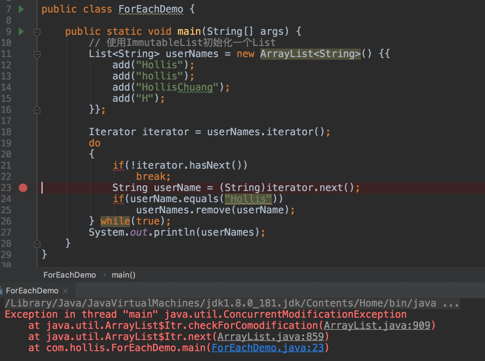
通过异常堆栈我们可以到，异常发生的调用链 ForEachDemo 的第 23 行，Iterator.next 调用了 Iterator.checkForComodification方法 ，而异常就是 checkForComodification 方法中抛出的。
其实，经过 debug 后，我们可以发现，如果 remove 代码没有被执行过，iterator.next 这一行是一直没报错的。抛异常的时机也正是 remove 执行之后的的那一次 next 方法的调用。
我们直接看下 checkForComodification 方法的代码，看下抛出异常的原因：
final void checkForComodification() {
if (modCount != expectedModCount)
throw new ConcurrentModificationException();
}
代码比较简单，modCount != expectedModCount的时候，就会抛出ConcurrentModificationException。
那么，就来看一下，remove/add 操作室如何导致 modCount 和 expectedModCount 不相等的吧。
remove/add 做了什么
首先，我们要搞清楚的是，到底 modCount 和 expectedModCount 这两个变量都是个什么东西。
通过翻源码，我们可以发现：
- modCount 是 ArrayList 中的一个成员变量。它表示该集合实际被修改的次数。
- expectedModCount 是 ArrayList 中的一个内部类——Itr 中的成员变量。expectedModCount 表示这个迭代器期望该集合被修改的次数。其值是在ArrayList.iterator 方法被调用的时候初始化的。只有通过迭代器对集合进行操作，该值才会改变。
- Itr 是一个 Iterator 的实现，使用 ArrayList.iterator 方法可以获取到的迭代器就是 Itr 类的实例。
他们之间的关系如下：
class ArrayList{
private int modCount;
public void add();
public void remove();
private class Itr implements Iterator<E> {
int expectedModCount = modCount;
}
public Iterator<E> iterator() {
return new Itr();
}
}
其实，看到这里，大概很多人都能猜到为什么 remove/add 操作之后，会导致 expectedModCount 和 modCount 不想等了。
通过翻阅代码，我们也可以发现，remove 方法核心逻辑如下：
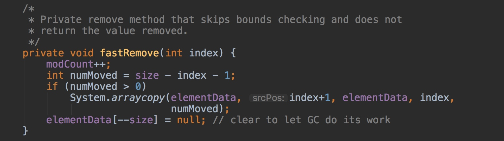
可以看到，它只修改了 modCount，并没有对 expectedModCount 做任何操作。
简单总结一下，之所以会抛出 ConcurrentModificationException 异常，是因为我们的代码中使用了增强 for 循环，而在增强 for 循环中，集合遍历是通过 iterator 进行的，但是元素的 add/remove 却是直接使用的集合类自己的方法。这就导致 iterator 在遍历的时候，会发现有一个元素在自己不知不觉的情况下就被删除/添加了，就会抛出一个异常，用来提示用户，可能发生了并发修改！
正确姿势
至此，我们介绍清楚了不能在 foreach 循环体中直接对集合进行 add/remove 操作的原因。
但是，很多时候，我们是有需求需要过滤集合的，比如删除其中一部分元素，那么应该如何做呢？有几种方法可供参考：
1、直接使用普通 for 循环进行操作
我们说不能在 foreach 中进行，但是使用普通的 for 循环还是可以的，因为普通 for 循环并没有用到 Iterator 的遍历，所以压根就没有进行 fail-fast 的检验。
List<String> userNames = new ArrayList<String>() {{
add("Hollis");
add("hollis");
add("HollisChuang");
add("H");
}};
for (int i = 0; i < 1; i++) {
if (userNames.get(i).equals("Hollis")) {
userNames.remove(i);
}
}
System.out.println(userNames);
这种方案其实存在一个问题，那就是 remove 操作会改变 List 中元素的下标，可能存在漏删的情况。
2、直接使用 Iterator 进行操作
除了直接使用普通 for 循环以外，我们还可以直接使用 Iterator 提供的 remove 方法。
List<String> userNames = new ArrayList<String>() {{
add("Hollis");
add("hollis");
add("HollisChuang");
add("H");
}};
Iterator iterator = userNames.iterator();
while (iterator.hasNext()) {
if (iterator.next().equals("Hollis")) {
iterator.remove();
}
}
System.out.println(userNames);
如果直接使用 Iterator 提供的 remove 方法，那么就可以修改到 expectedModCount 的值。那么就不会再抛出异常了。其实现代码如下：
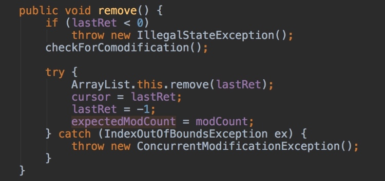
3、使用 Java 8 中提供的 filter 过滤
Java 8 中可以把集合转换成流，对于流有一种 filter 操作， 可以对原始 Stream 进行某项测试，通过测试的元素被留下来生成一个新 Stream。
List<String> userNames = new ArrayList<String>() {{
add("Hollis");
add("hollis");
add("HollisChuang");
add("H");
}};
userNames = userNames.stream().filter(userName -> !userName.equals("Hollis")).collect(Collectors.toList());
System.out.println(userNames);
4、使用增强 for 循环其实也可以
如果，我们非常确定在一个集合中，某个即将删除的元素只包含一个的话， 比如对 Set 进行操作，那么其实也是可以使用增强 for 循环的，只要在删除之后，立刻结束循环体，不要再继续进行遍历就可以了，也就是说不让代码执行到下一次的 next 方法。
List<String> userNames = new ArrayList<String>() {{
add("Hollis");
add("hollis");
add("HollisChuang");
add("H");
}};
for (String userName : userNames) {
if (userName.equals("Hollis")) {
userNames.remove(userName);
break;
}
}
System.out.println(userNames);
5、直接使用 fail-safe 的集合类
在 Java 中，除了一些普通的集合类以外，还有一些采用了 fail-safe 机制的集合类。这样的集合容器在遍历时不是直接在集合内容上访问的，而是先复制原有集合内容，在拷贝的集合上进行遍历。
由于迭代时是对原集合的拷贝进行遍历，所以在遍历过程中对原集合所作的修改并不能被迭代器检测到，所以不会触发ConcurrentModificationException。
ConcurrentLinkedDeque<String> userNames = new ConcurrentLinkedDeque<String>() {{
add("Hollis");
add("hollis");
add("HollisChuang");
add("H");
}};
for (String userName : userNames) {
if (userName.equals("Hollis")) {
userNames.remove();
}
}
基于拷贝内容的优点是避免了ConcurrentModificationException，但同样地，迭代器并不能访问到修改后的内容，即：迭代器遍历的是开始遍历那一刻拿到的集合拷贝，在遍历期间原集合发生的修改迭代器是不知道的。
java.util.concurrent 包下的容器都是安全失败，可以在多线程下并发使用，并发修改。
小结
我们使用的增强 for 循环，其实是 Java 提供的语法糖，其实现原理是借助 Iterator 进行元素的遍历。
但是如果在遍历过程中，不通过 Iterator，而是通过集合类自身的方法对集合进行添加/删除操作。那么在 Iterator 进行下一次的遍历时，经检测发现有一次集合的修改操作并未通过自身进行，那么可能是发生了并发被其他线程执行的，这时候就会抛出异常，来提示用户可能发生了并发修改，这就是所谓的 fail-fast 机制。
当然还是有很多种方法可以解决这类问题的。比如使用普通 for 循环、使用 Iterator 进行元素删除、使用 Stream 的 filter、使用 fail-safe 的类等。
为什么建议集合初始化时，指定集合容量大小
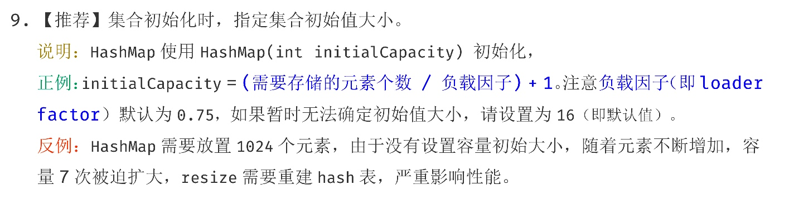
集合是 Java 开发日常开发中经常会使用到的。在之前的一些文章中，我们介绍过一些关于使用集合类应该注意的事项，如《为什么阿里巴巴禁止在 foreach 循环里进行元素的 remove/add 操作》。
关于集合类，还有很多地方需要注意，本文就来分析下问什么建议集合初始化时，指定集合容量大小？如果一定要设置初始容量的话，设置多少比较合适？
为什么要设置 HashMap 的初始化容量
我们先来写一段代码在 JDK 1.7 （jdk1.7.0_79）下面来分别测试下，在不指定初始化容量和指定初始化容量的情况下性能情况如何。（jdk 8 结果会有所不同，我会在后面的文章中分析）
public static void main(String[] args) {
int aHundredMillion = 10000000;
Map<Integer, Integer> map = new HashMap<>();
long s1 = System.currentTimeMillis();
for (int i = 0; i < aHundredMillion; i++) {
map.put(i, i);
}
long s2 = System.currentTimeMillis();
System.out.println("未初始化容量，耗时 ： " + (s2 - s1));
Map<Integer, Integer> map1 = new HashMap<>(aHundredMillion / 2);
long s5 = System.currentTimeMillis();
for (int i = 0; i < aHundredMillion; i++) {
map1.put(i, i);
}
long s6 = System.currentTimeMillis();
System.out.println("初始化容量5000000，耗时 ： " + (s6 - s5));
Map<Integer, Integer> map2 = new HashMap<>(aHundredMillion);
long s3 = System.currentTimeMillis();
for (int i = 0; i < aHundredMillion; i++) {
map2.put(i, i);
}
long s4 = System.currentTimeMillis();
System.out.println("初始化容量为10000000，耗时 ： " + (s4 - s3));
}
以上代码不难理解，我们创建了 3 个 HashMap，分别使用默认的容量（16）、使用元素个数的一半（5千万）作为初始容量、使用元素个数（一亿）作为初始容量进行初始化。然后分别向其中 put 一亿个 KV。
输出结果：
未初始化容量，耗时 ： 14419
初始化容量5000000，耗时 ： 11916
初始化容量为10000000，耗时 ： 7984
从结果中，我们可以知道，在已知 HashMap 中将要存放的 KV 个数的时候，设置一个合理的初始化容量可以有效的提高性能。
当然，以上结论也是有理论支撑的。我们HashMap 中傻傻分不清楚的那些概念文章介绍过，HashMap 有扩容机制，就是当达到扩容条件时会进行扩容。HashMap 的扩容条件就是当 HashMap 中的元素个数（size）超过临界值（threshold）时就会自动扩容。在 HashMap 中，threshold = loadFactor * capacity。
所以，如果我们没有设置初始容量大小，随着元素的不断增加，HashMap 会发生多次扩容，而 HashMap 中的扩容机制决定了每次扩容都需要重建 hash 表，是非常影响性能的。
从上面的代码示例中，我们还发现，同样是设置初始化容量，设置的数值不同也会影响性能，那么当我们已知 HashMap 中即将存放的 KV 个数的时候，容量设置成多少为好呢？
HashMap 中容量的初始化
默认情况下，当我们设置 HashMap 的初始化容量时，实际上 HashMap 会采用第一个大于该数值的 2 的幂作为初始化容量。
如以下示例代码：
Map<String, String> map = new HashMap<String, String>(1);
map.put("hahaha", "hollischuang");
Class<?> mapType = map.getClass();
Method capacity = mapType.getDeclaredMethod("capacity");
capacity.setAccessible(true);
System.out.println("capacity : " + capacity.invoke(map));
在 jdk1.7 中，初始化容量设置成 1 的时候，输出结果是 2。在 jdk1.8 中，如果我们传入的初始化容量为 1，实际上设置的结果也为 1，上面代码输出结果为 2 的原因是代码中 map.put("hahaha", "hollischuang")；导致了扩容，容量从 1 扩容到 2。
那么，话题再说回来，当我们通过 HashMap(int initialCapacity)设置初始容量的时候，HashMap 并不一定会直接采用我们传入的数值，而是经过计算，得到一个新值，目的是提高 hash 的效率。(1->1、3->4、7->8、9->16)
在 Jdk 1.7 和 Jdk 1.8 中，HashMap 初始化这个容量的时机不同。jdk1.8 中，在调用 HashMap 的构造函数定义 HashMap 的时候，就会进行容量的设定。而在 Jdk 1.7 中，要等到第一次 put 操作时才进行这一操作。
不管是 Jdk 1.7 还是 Jdk 1.8，计算初始化容量的算法其实是如出一辙的，主要代码如下：
int n = cap - 1;
n |= n >>> 1;
n |= n >>> 2;
n |= n >>> 4;
n |= n >>> 8;
n |= n >>> 16;
return (n < 0) ? 1 : (n >= MAXIMUM_CAPACITY) ? MAXIMUM_CAPACITY : n + 1;
上面的代码挺有意思的，一个简单的容量初始化，Java 的工程师也有很多考虑在里面。
上面的算法目的挺简单，就是：根据用户传入的容量值（代码中的cap），通过计算，得到第一个比他大的 2 的幂并返回。
聪明的读者们，如果让你设计这个算法你准备如何计算？如果你想到二进制的话，那就很简单了。举几个例子看一下：
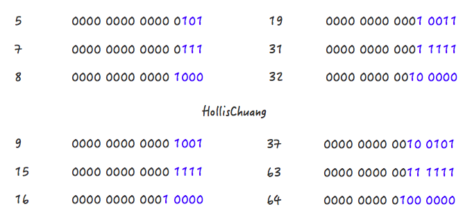
请关注上面的几个例子中，蓝色字体部分的变化情况，或许你会发现些规律。5->8、9->16、19->32、37->64 都是主要经过了两个阶段。
Step 1，5->7
Step 2，7->8
Step 1，9->15
Step 2，15->16
Step 1，19->31
Step 2，31->32
对应到以上代码中，Step1：
n |= n >>> 1;
n |= n >>> 2;
n |= n >>> 4;
n |= n >>> 8;
n |= n >>> 16;
对应到以上代码中，Step2：
return (n < 0) ? 1 : (n >= MAXIMUM_CAPACITY) ? MAXIMUM_CAPACITY : n + 1;
Step 2 比较简单，就是做一下极限值的判断，然后把 Step 1 得到的数值 +1。
Step 1 怎么理解呢？**其实是对一个二进制数依次向右移位，然后与原值取或。**其目的对于一个数字的二进制，从第一个不为 0 的位开始，把后面的所有位都设置成 1。
随便拿一个二进制数，套一遍上面的公式就发现其目的了：
1100 1100 1100 >>>1 = 0110 0110 0110
1100 1100 1100 | 0110 0110 0110 = 1110 1110 1110
1110 1110 1110 >>>2 = 0011 1011 1011
1110 1110 1110 | 0011 1011 1011 = 1111 1111 1111
1111 1111 1111 >>>4 = 1111 1111 1111
1111 1111 1111 | 1111 1111 1111 = 1111 1111 1111
通过几次无符号右移和按位或运算，我们把 1100 1100 1100 转换成了1111 1111 1111 ，再把 1111 1111 1111 加 1，就得到了 1 0000 0000 0000，这就是大于 1100 1100 1100 的第一个 2 的幂。
好了，我们现在解释清楚了 Step 1 和 Step 2 的代码。就是可以把一个数转化成第一个比他自身大的 2 的幂。（可以开始佩服 Java 的工程师们了，使用无符号右移和按位或运算大大提升了效率。）
但是还有一种特殊情况套用以上公式不行，这些数字就是 2 的幂自身。如果数字 4 套用公式的话。得到的会是 8 ：
Step 1:
0100 >>>1 = 0010
0100 | 0010 = 0110
0110 >>>1 = 0011
0110 | 0011 = 0111
Step 2:
0111 + 0001 = 1000
为了解决这个问题，JDK 的工程师把所有用户传进来的数在进行计算之前先 -1，就是源码中的第一行：
int n = cap - 1;
至此，再来回过头看看这个设置初始容量的代码，目的是不是一目了然了：
int n = cap - 1;
n |= n >>> 1;
n |= n >>> 2;
n |= n >>> 4;
n |= n >>> 8;
n |= n >>> 16;
return (n < 0) ? 1 : (n >= MAXIMUM_CAPACITY) ? MAXIMUM_CAPACITY : n + 1;
HashMap 中初始容量的合理值
当我们使用HashMap(int initialCapacity)来初始化容量的时候，jdk 会默认帮我们计算一个相对合理的值当做初始容量。那么，是不是我们只需要把已知的 HashMap 中即将存放的元素个数直接传给 initialCapacity 就可以了呢？
关于这个值的设置，在《阿里巴巴 Java 开发手册》有以下建议：
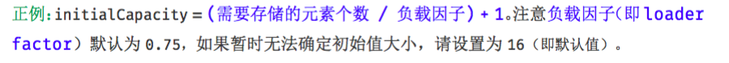
这个值，并不是阿里巴巴的工程师原创的，在 guava（21.0 版本）中也使用的是这个值。
public static <K, V> HashMap<K, V> newHashMapWithExpectedSize(int expectedSize) {
return new HashMap<K, V>(capacity(expectedSize));
}
/**
* Returns a capacity that is sufficient to keep the map from being resized as long as it grows no
* larger than expectedSize and the load factor is ≥ its default (0.75).
*/
static int capacity(int expectedSize) {
if (expectedSize < 3) {
checkNonnegative(expectedSize, "expectedSize");
return expectedSize + 1;
}
if (expectedSize < Ints.MAX_POWER_OF_TWO) {
// This is the calculation used in JDK8 to resize when a putAll
// happens; it seems to be the most conservative calculation we
// can make. 0.75 is the default load factor.
return (int) ((float) expectedSize / 0.75F + 1.0F);
}
return Integer.MAX_VALUE; // any large value
}
在return (int) ((float) expectedSize / 0.75F + 1.0F);上面有一行注释，说明了这个公式也不是 guava 原创，参考的是 JDK8 中 putAll 方法中的实现的。感兴趣的读者可以去看下 putAll 方法的实现，也是以上的这个公式。
虽然，当我们使用HashMap(int initialCapacity)来初始化容量的时候，jdk 会默认帮我们计算一个相对合理的值当做初始容量。但是这个值并没有参考 loadFactor 的值。
也就是说，如果我们设置的默认值是 7，经过 JDK 处理之后，会被设置成 8，但是，这个 HashMap 在元素个数达到 8*0.75 = 6 的时候就会进行一次扩容，这明显是我们不希望见到的。
如果我们通过expectedSize / 0.75F + 1.0F计算，7/0.75 + 1 = 10 ,10 经过 JDK 处理之后，会被设置成 16，这就大大的减少了扩容的几率。
当 HashMap 内部维护的哈希表的容量达到 75% 时（默认情况下），会触发 rehash，而 rehash 的过程是比较耗费时间的。所以初始化容量要设置成 expectedSize/0.75 + 1 的话，可以有效的减少冲突也可以减小误差。
所以，我可以认为，当我们明确知道 HashMap 中元素的个数的时候，把默认容量设置成 expectedSize / 0.75F + 1.0F 是一个在性能上相对好的选择，但是，同时也会牺牲些内存。
小结
当我们想要在代码中创建一个 HashMap 的时候，如果我们已知这个 Map 中即将存放的元素个数，给 HashMap 设置初始容量可以在一定程度上提升效率。
但是，JDK 并不会直接拿用户传进来的数字当做默认容量，而是会进行一番运算，最终得到一个 2 的幂。原因在《全网把Map中的hash()分析的最透彻的文章，别无二家。》介绍过，得到这个数字的算法其实是使用了使用无符号右移和按位或运算来提升效率。
但是，为了最大程度的避免扩容带来的性能消耗，我们建议可以把默认容量的数字设置成 expectedSize / 0.75F + 1.0F 。在日常开发中，可以使用
Map<String, String> map = Maps.newHashMapWithExpectedSize(10);
来创建一个 HashMap，计算的过程 guava 会帮我们完成。
但是，以上的操作是一种用内存换性能的做法，真正使用的时候，要考虑到内存的影响。
好啦，以上就是本次 Chat 的全部内容，由于篇幅有限，无法把这个系列的内容全部都写出来，本文主要挑选了部分知识点进行讲解。希望读者可以学会在使用规约的同时，去洞悉其背后的思考。